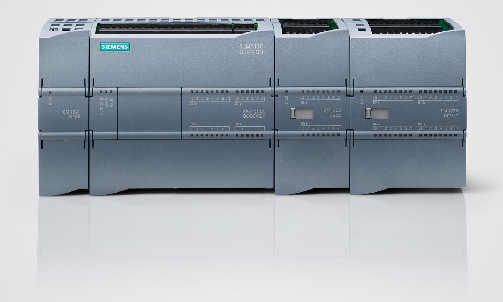
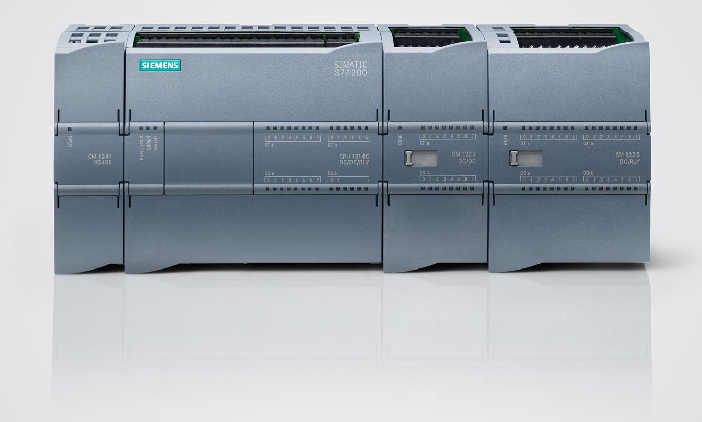

EMMANUEL OCHIENG OKELLO
I am skilled in a wide range of electrical applications and soft skills as well. Some of my technical skills include;
Technical skills
Industrial Automation
I have taken a level one course in industrial automation with Viscar Industrial Capacity ltd. This entailed a myriad of different technologies including;
PLCs
I am well versed with PLCs. Some of the PLCs I have interacted with are Siemens and Kinco. Software programs I have used are Simatic manager v5.6, TIA portal V18
 

HMIs
I have also interacted with HMIs, and can comfortably set them up. I can also program PLCs from the HMI interface.

SCADA
In my training, I also learned about SCADA systems and how to apply them in matters controls via Siemens Wincc panel

Fluid Power Systems
Pneumatics
I have a firm grasp on pneumatic systems, from setting up the compressor, wiring valves, and wiring actuators. I also have the skills to wire electropneumatic systems control that employ controlvia relays or PLCs.

Hydraulics
I also have experience with hydraulic systems, from setting up the power unit system, wiring valves, and wiring actuators. I also have the skills to wire electrohydraulic systems control that employ control via relays or PLCs.

Networking
I am conversant with different international standards as with regards to networking. I am aware of standards and protocols applied to industrial equipment. I have interacted with different media such as;
Ethernet

USB-MPI

Profibus

Fieldbus

Variable frequency drives
I can install, commission and parameterize VFDs.

Electronic troubleshooting
I am able to carry out basic troubleshooting of electronic devices ranging from detecting faulty circuits to basic soldering applications

Having worked with Kenya Power as an attachee, I have numerous skills in power distribution. These skills include;